包材
杯子、杯蓋、吸管、瓶子與杯套，可印品牌。
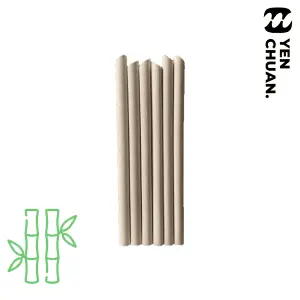
Bamboo fibre straws PP coffee cup lidsPP heart plug lids
PP coffee cup lidsPP heart plug lids Plastic cup holders (6 cups)
Plastic cup holders (6 cups) Plastic cup holders (4 cups)
Plastic cup holders (4 cups)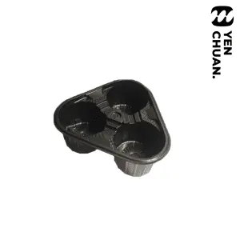
Plastic cup holders (3 cups)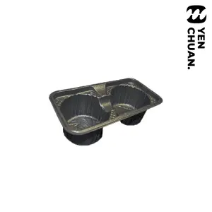
Plastic cup holders (2 cups) Ice Cream Cups
Ice Cream Cups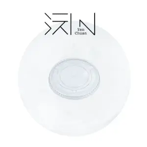
PET plastic flat lids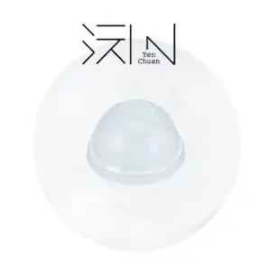
PET plastic domed lids Coffee cups with pattern (double-layered)
Coffee cups with pattern (double-layered) Paper coffee cups (double-layered)
Paper coffee cups (double-layered) Paper cups for cold beverage (type C)
Paper cups for cold beverage (type C) Paper cups for cold beverage (type B)
Paper cups for cold beverage (type B) Paper cups for cold beverage (type A)
Paper cups for cold beverage (type A)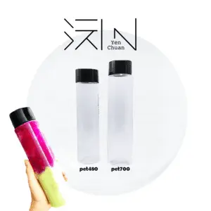
PET Plastic bottles (soft)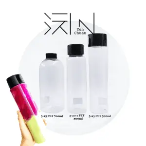
PET Plastic bottles (hard)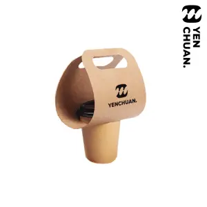
Craft paper cup carrier (1 cup)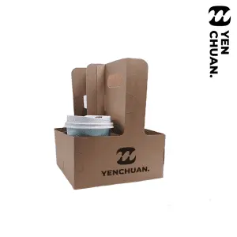
Craft paper cup carrier with handle (4 cups)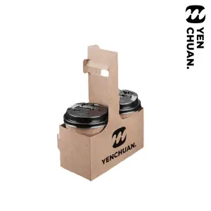
Craft paper cup carrier with handle (2 cups)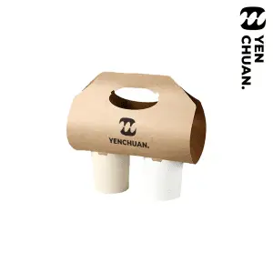
Craft paper cup carrier (2 cups)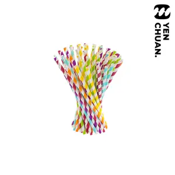
Paper straws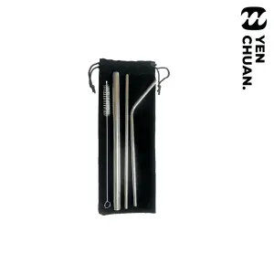
Stainless steel straws set (3+1)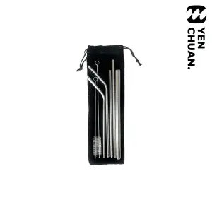
Stainless steel straws set (5+2)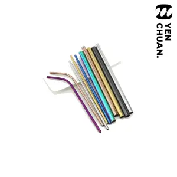
Stainless steel straws PP Pattern Cups
PP Pattern Cups PP plastic cups (diameter 90mm)
PP plastic cups (diameter 90mm) PP plastic cups (diameter 95mm)
PP plastic cups (diameter 95mm) Chubby cups
Chubby cups PET plastic cups (diameter 92 mm)
PET plastic cups (diameter 92 mm) PET plastic cups (diameter 98 mm)
PET plastic cups (diameter 98 mm)示範用中文頁面；商品名稱暫用英文。